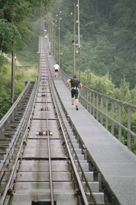

Contents | About | Contact
article 11, issue 03
Power levels during stair climbingTheo Schmidt
December 31, 2006
The Niesenlauf
The peak in the Swiss Bernese Oberland known as the Niesen has a funicular railway up its flank. There is a stairway alongside the whole way, supposedly the world's longest. It has 11'674 steps and goes from an altitude of 693 m to 2362 m, giving a difference of 1679 m. Since 2004 there is an annual opportunity to race up the steps in summer. Details are provided in German at the website www.niesenlauf.ch. A picture from this website shows the bottom part of the steps apparently here covered by a metal surface and steepening further up.
The best times up the 1679 meter climb are around 1 hour and 3 minutes. Using the equation below, if we assume that these contestants have a mass of 80 kg, the average power is about 350 W.
P [W] = m [kg] · g [m/s2] · h [m] / t [s]
where m is the person's mass, g is gravity at 9.81 m/s2, h is the height climbed, and t is the time taken.
This power level is nearly at the level given by the NASA curve for "first class athletes" engaged in foot cranking (see e.g. Human Power 45 page 18 (3.9 MB PDF download!) even though the contestants are local amateurs. It can be concluded that climbing stairs is a pretty efficent way to exert human power.
Human Power eJournal